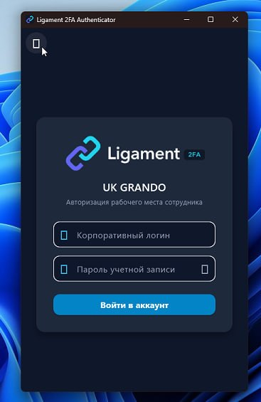

Архитектура и системные требования
Ligament функционирует полностью автономно внутри закрытого корпоративного периметра (100% On-Premise). Все мастер-ключи, базы учётных записей, хэши паролей и журналы аудита хранятся строго в вашей СУБД PostgreSQL. Решение не обращается к внешним облакам и полностью поддерживает работу в изолированных сегментах (Air-Gapped).
Минимальные аппаратные ресурсы
- Процессор (CPU): 1 виртуальное или физическое ядро (x86_64 или ARM64).
- Оперативная память (RAM): 1 ГБ (рекомендуется 2 ГБ при нагрузках от 500 активных сотрудников).
- Дисковое пространство: 10 ГБ на SSD/NVMe (для ОС, Docker-образов и базы данных).
- Поддерживаемые ОС: Astra Linux (SE 1.7 / CE), РЕД ОС (7.3 / 8), Альт (p9 / p10), Ubuntu Server 22.04/24.04, Debian 12, Rocky/AlmaLinux 9.
Сетевые порты платформы
| Порт | Протокол | Назначение | Область видимости |
|---|---|---|---|
80 |
TCP | Редирект на HTTPS и ACME HTTP-01 challenge | Внешний / Внутренний |
8080 |
TCP | Веб-консоль управления, кабинет пользователя, REST API, WebSSO | Внутренний или через Reverse Proxy |
443 |
TCP | Защищённый HTTPS/WSS (клиентские агенты, релеи, WebAuthn) | Рабочие станции, филиалы |
1812 |
UDP | RADIUS Authentication (MikroTik, VPN, Wi-Fi 802.1X) | Сетевые маршрутизаторы, точки доступа |
1813 |
UDP | RADIUS Accounting (учёт сетевых сессий и трафика) | Сетевые маршрутизаторы |
Способы установки сервера Ligament Core
Все компоненты Ligament Core поставляются в виде готового Docker-образа в официальном репозитории Docker Hub aligorov/ligament_2fa. Компиляция и локальная сборка не требуются.
Вариант А: Автоматический скрипт одной командой (Рекомендуется)
Инсталлятор автоматически проверяет наличие Docker Engine, сканирует порты 80/8080 (TCP) и 1812/1813 (UDP), генерирует криптографически стойкий пароль PostgreSQL в .env (с правами 0600), запускает контейнеры и ожидает готовности эндпоинта /healthz.
mkdir -p /opt/ligament && cd /opt/ligament
curl -fsSL https://raw.githubusercontent.com/aligorov/ligament/main/install.sh -o install.sh
chmod +x install.sh && ./install.shПолезные параметры запуска скрипта:
./install.sh --http-port 8080 — использовать непривилегированный порт 8080 без необходимости прав root.
./install.sh --tag v1.1.73 — зафиксировать конкретную стабильную версию контейнера.
./install.sh --fresh — выполнить чистый перезапуск при наличии старой базы данных прошлого развёртывания.
Вариант Б: Ручной запуск через Docker Compose
Создайте файл docker-compose.yml в рабочем каталоге /opt/ligament:
services:
db:
image: postgres:16-alpine
environment:
POSTGRES_USER: twofa
POSTGRES_PASSWORD: "${TWOFA_PG_PASSWORD:?Задайте пароль БД в .env}"
POSTGRES_DB: twofa
volumes:
- twofa_pgdata:/var/lib/postgresql/data
healthcheck:
test: ["CMD-SHELL", "pg_isready -U twofa -d twofa"]
interval: 5s
timeout: 3s
retries: 20
restart: unless-stopped
twofa:
image: aligorov/ligament_2fa:latest
hostname: ligament-auth
depends_on:
db:
condition: service_healthy
environment:
TWOFA_DB_DSN: "postgres://twofa:${TWOFA_PG_PASSWORD}@db:5432/twofa"
TRUSTED_PROXIES: "127.0.0.0/8,::1/128,172.16.0.0/12,10.0.0.0/8,192.168.0.0/16"
ports:
- "80:8080"
- "8080:8080"
- "1812:1812/udp"
- "1813:1813/udp"
volumes:
- /etc/machine-id:/etc/host-machine-id:ro
restart: unless-stopped
volumes:
twofa_pgdata:Сгенерируйте файл .env с надёжным паролем и запустите стек:
echo "TWOFA_PG_PASSWORD=$(openssl rand -hex 24)" > .env
chmod 600 .env
docker compose up -dПервый вход администратора и безопасность
В целях безопасности первичный пароль администратора не печатается в stdout логах Docker, чтобы предотвратить его утечку в централизованные системы сбора журналов (ELK/Graylog/Loki).
При первом старте система автоматически генерирует временный пароль и 5 одноразовых кодов аварийного восстановления доступа (Break-Glass recovery codes). Извлеките их на хост:
# Забрать сгенерированный пароль администратора:
docker cp $(docker compose ps -q twofa):/home/nonroot/admin_password.txt .
# Забрать 5 одноразовых break-glass кодов восстановления:
docker cp $(docker compose ps -q twofa):/home/nonroot/admin_recovery_codes.txt .
# Просмотреть пароль:
cat admin_password.txtОбязательные действия сразу после входа:
1. Откройте веб-интерфейс http://IP-адрес-сервера:8080 (логин: admin).
2. Сохраните admin_recovery_codes.txt в корпоративный сейф паролей (KeePass / Vault).
3. Удалите файл admin_password.txt с сервера командой rm -f admin_password.txt.
4. В профиле учётной записи установите постоянный пароль и подключите двухфакторную аутентификацию (TOTP или Telegram).
Активация лицензии и квоты пользователей
Из коробки сервер запускается в бесплатной редакции Community — до 5 активных пользователей навсегда без ограничения срока действия.
Для расширения штата пользователей или активации корпоративных модулей (OpenID Connect / SAML SSO, Бастион, Windows Logon UAC elevation, Branch Relay):
- Перейдите в панель управления: /admin → Лицензия.
- Вставьте полученный лицензионный ключ (подписанный криптографический блок Base64 на алгоритме Ed25519) в текстовое поле.
- Нажмите кнопку «Сохранить лицензию».
Мгновенное применение без интернета:
Лицензия проверяется локальной математической подписью открытым ключом вендора. Она активируется моментально без перезагрузки контейнеров и без необходимости выхода сервера в интернет.
Настройка домена и SSL/TLS
Корректный внешний URL необходим для корректной генерации ссылок подтверждения входа, WebSSO перенаправлений и валидации WebAuthn / Passkeys.
В веб-интерфейсе перейдите в /admin → Настройки → Домен и шаблоны и укажите базовый адрес вашей инсталляции:
"server.domain": "https://auth.company.corp"Схемы организации HTTPS:
- Внешний Reverse Proxy (Nginx, Caddy, Traefik, HAProxy): Рекомендуемый промышленный способ. Контейнер Ligament принимает локальный HTTP-трафик на порту 8080, а TLS-сертификаты терминируются на корпоративном шлюзе. Обязательно передавайте заголовки
X-Forwarded-ForиX-Forwarded-Proto: https. - Встроенный ACME (Let's Encrypt): При прямой доступности портов 80 и 443 из сети Интернет включите авто-заказ сертификата в /admin → Настройки → SSL/TLS (переменные
acme.domainиacme.email).
Интеграция с Active Directory и FreeIPA
Ligament поддерживает сквозную аутентификацию сотрудников по каталогу пользователей Active Directory или FreeIPA через защищённый протокол LDAPS.
В разделе панели /admin → Настройки → Служба каталогов (LDAP) задайте конфигурацию подключения:
| Параметр | Пример значения | Описание |
|---|---|---|
enabled |
true |
Включение модуля синхронизации с доменом |
url |
ldaps://dc1.company.corp:636 |
Защищённый адрес контроллера домена |
bind_dn |
CN=svc-ligament,OU=Services,DC=company,DC=corp |
Служебная учётная запись для поиска пользователей |
bind_password |
•••••••••••• |
Пароль служебной учётной записи |
base_dn |
DC=company,DC=corp |
Базовый корень дерева Active Directory |
user_filter |
(&(objectCategory=person)(sAMAccountName={login})) |
Фильтр поиска целевого сотрудника по логину |
cache_passwords |
true |
Шифрование проверенных паролей для Wi-Fi PEAP |
Зачем нужно кэширование паролей (cache_passwords):
При подключении к корпоративному Wi-Fi по стандарту WPA2/WPA3 Enterprise (EAP-PEAP / MS-CHAPv2) протокол требует сверки NT-хэша пароля на стороне RADIUS. Ligament безопасно шифрует проверенный доменный пароль мастер-ключом сервера в таблице users.password_enc, что позволяет сотрудникам входить в Wi-Fi сеть без изменения схемы Active Directory.
Настройка каналов доставки второго фактора (MFA)
В разделе /admin → Настройки настройте удобные для вашей компании каналы подтверждения:
1. Telegram-бот (Подтверждение в 1 клик и Number Matching)
Сотрудники могут подтверждать вход кнопкой прямо в корпоративном мессенджере без необходимости установки мобильных приложений:
- Создайте бота в Telegram через официального
@BotFather(команда/newbot). - Вставьте полученный токен в /admin → Настройки → Telegram → telegram.bot_token.
- Сотрудники связывают бота со своей учётной записью, сканируя QR-код из личного кабинета.
2. Корпоративный почтовый сервер (SMTP)
{
"host": "mail.company.corp",
"port": 587,
"starttls": true,
"user": "auth-noreply@company.corp",
"password": "PasswordHere",
"from": "auth-noreply@company.corp",
"subject": "Код подтверждения входа"
}3. SMS-шлюзы и Голосовая доставка (TTS)
Поддерживаются встроенные пресеты: SMS.RU, SMS-Центр (smsc.ru), Devino Telecom, МегаФон Таргет, протокол SMPP и аппаратные USB-модемы.
4. Аппаратные FIDO2/Passkey токены (WebAuthn)
Аппаратные USB-ключи (Рутокен MFA, YubiKey) и встроенные биометрические датчики (Windows Hello, Touch ID) работают нативно по открытым стандартам FIDO Alliance.
Настройка RADIUS (MikroTik RouterOS, VPN, Wi-Fi 802.1X)
Ligament Core содержит высокопроизводительный встроенный RADIUS-сервер (порты UDP 1812 — аутентификация, 1813 — аккаунтинг). В разделе /admin → Настройки → RADIUS задайте секретный ключ radius.secret.
Интеграция с MikroTik RouterOS
Выполните команды в терминале RouterOS для защиты входа в маршрутизатор, VPN-серверов и беспроводной сети:
# Подключение сервера Ligament как RADIUS-провайдера:
/radius add address=192.168.1.10 secret="ВашСекретныйКлюч" service=login,ppp,wireless timeout=5s
# Включение RADIUS для входа администраторов в WinBox / SSH:
/user aaa set use-radius=yes
# Включение 2FA для VPN-туннелей (L2TP / SSTP / OpenVPN / PPTP):
/ppp aaa set use-radius=yes accounting=yes
# Включение принудительного разрыва сессий (RFC 3576 CoA / Disconnect):
/radius incoming set accept=yesРазвёртывание агентов Windows Logon & RDP (MSI + GPO)
Модуль Ligament Windows Credential Provider интегрируется напрямую в экран блокировки Windows (LogonUI) для защиты локальных консолей и терминальных RDP-сессий с поддержкой мгновенного Auto-Logon.
Реальный интерфейс входа пользователя в Windows
Ниже представлены скриншоты работы нативного провайдера на экране входа в систему:


Централизованная раскатка через Active Directory GPO:
- Скачайте релизный пакет
Ligament-2FA-Windows-x64.msiи административные шаблоныLigament2FA.admx/Ligament2FA.admlиз раздела загрузок. - Скопируйте
Ligament2FA.admxв каталог Центрального хранилища шаблонов:\\domain.corp\SYSVOL\domain.corp\Policies\PolicyDefinitions\. - Скопируйте языковой файл
Ligament2FA.admlв подпапкуPolicyDefinitions\ru-RU\(илиen-US\). - В консоли управления групповыми политиками (
gpmc.msc) настройте параметры:- Server URL:
https://auth.company.corp:8080 - 2FA Mode:
RDP and Local Console(илиRDP Only) - Auto-Logon:
Enabled(мгновенная разблокировка экрана после push-подтверждения) - Number Matching:
Enabled(отображение контрольного числа на экране) - Fail Mode:
Fail-Open(резервный доступ при аварии сети) илиFail-Close(строгая изоляция).
- Server URL:
- Назначьте фоновую установку MSI-пакета в разделе Конфигурация компьютера → Политики → Установка программ.
Подключение сотрудников и клиентские приложения
Процедура первого подключения (онбординга) сотрудника максимально автоматизирована и занимает менее 1 минуты:
- Сотрудник открывает портал
https://auth.company.corp/и входит с доменными учётными данными. - На экране отображается динамический QR-код привязки.
- Сотрудник сканирует код в мобильном приложении Ligament Authenticator (Android/iOS) либо нажимает кнопку перехода в корпоративный Telegram-бот.
- Устройство надёжно привязано: все последующие входы в Windows, VPN или веб-портал подтверждаются в один клик.
Десктопный клиент Ligament 2FA Authenticator
Для рабочих станций сотрудников под управлением Windows и российских ОС Linux (Astra Linux Special Edition 1.7, РЕД ОС 7.3/8, Альт Рабочая станция p9/p10) доступно графическое приложение аутентификации:

x-scheme-handler/ligament.
Развёртывание узлов Ligament Relay в филиалах
Для удалённых подразделений, складов и филиалов с нестабильным доступом в интернет узел Ligament Relay решает две ключевые задачи:
- Безопасный проброс RDP и SSH: Relay поднимает защищённый исходящий WSS-туннель (порт 443) к Core, позволяя администраторам подключаться к серверам филиала без белого IP и без открытия портов 3389/22 наружу.
- Резервный RADIUS для Wi-Fi: При полном обрыве интернет-канала локальный Relay выступает автономным RADIUS-сервером: корпоративный Wi-Fi (802.1X WPA2/WPA3 Enterprise) продолжает авторизовывать сотрудников по локальному кэшу.
services:
relay:
image: aligorov/ligament_relay:latest
restart: unless-stopped
ports:
- "1812:1812/udp"
environment:
CORE_URL: "https://auth.company.corp"
RELAY_SECRET: "ПарольФилиалаИзПанелиАдминистратора"Диагностика, мониторинг и резервное копирование
Проверка готовности сервиса (Healthcheck)
curl -I http://localhost:8080/healthz
# Ответ: HTTP/1.1 200 OKЖурнал аудита событий безопасности
В разделе консоли /admin/audit в режиме реального времени отображаются все события периметра:
- Успешные и отклонённые попытки входа в Windows, VPN, Wi-Fi и веб-сервисы.
- IP-адрес источника, имя рабочей станции, используемый фактор 2FA и контрольное число.
- Срабатывания защитного механизма Fail2Ban при подборе паролей.
Резервное копирование базы данных PostgreSQL
Для создания резервной копии базы выполните команду (рекомендуется настроить по cron):
# Создание сжатого дампа базы данных:
docker compose exec -T db pg_dump -U twofa twofa | gzip > "ligament_backup_$(date +%F_%H%M).sql.gz"
# Восстановление базы из дампа:
gunzip < ligament_backup_YYYY-MM-DD.sql.gz | docker compose exec -T db psql -U twofa twofaНужна помощь с пилотным внедрением?
Инженеры технической поддержки помогут настроить интеграцию с вашей инфраструктурой Active Directory и сетевым оборудованием. Напишите нам на admin@ligam.org или в Telegram @ligament_support.